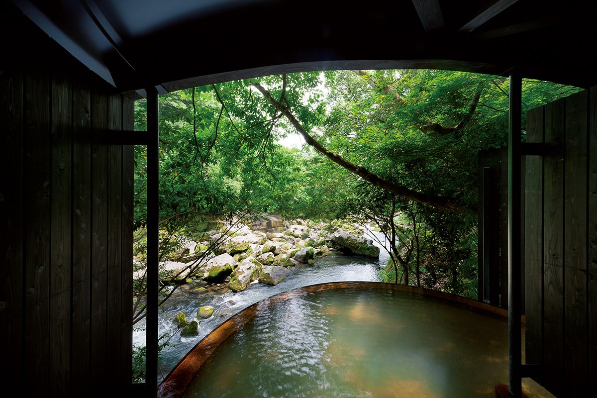
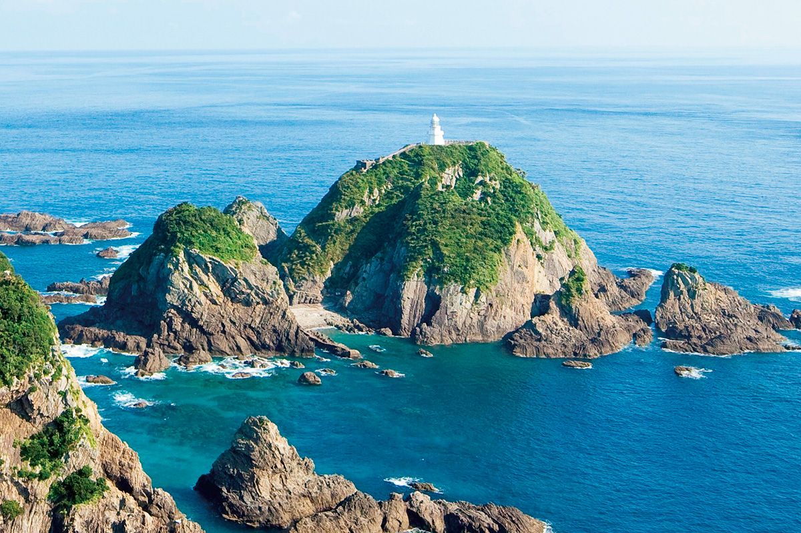
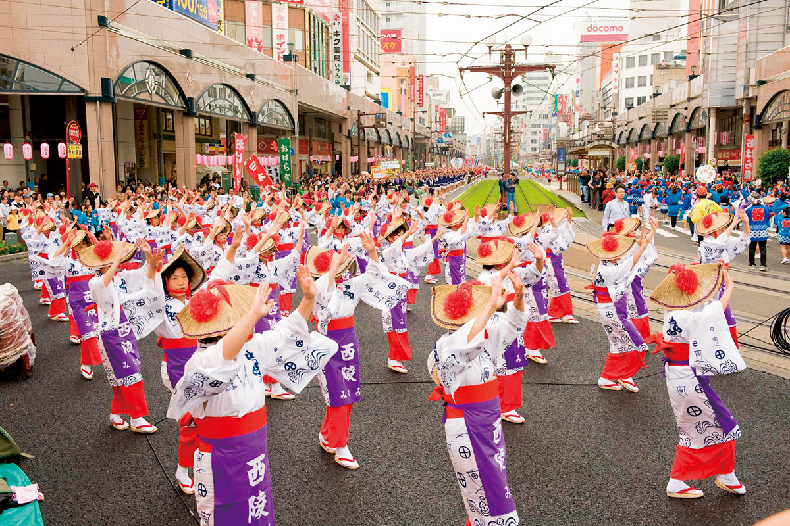
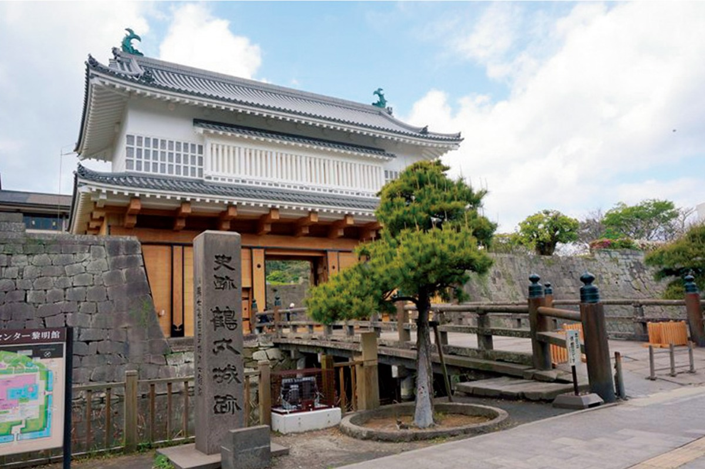
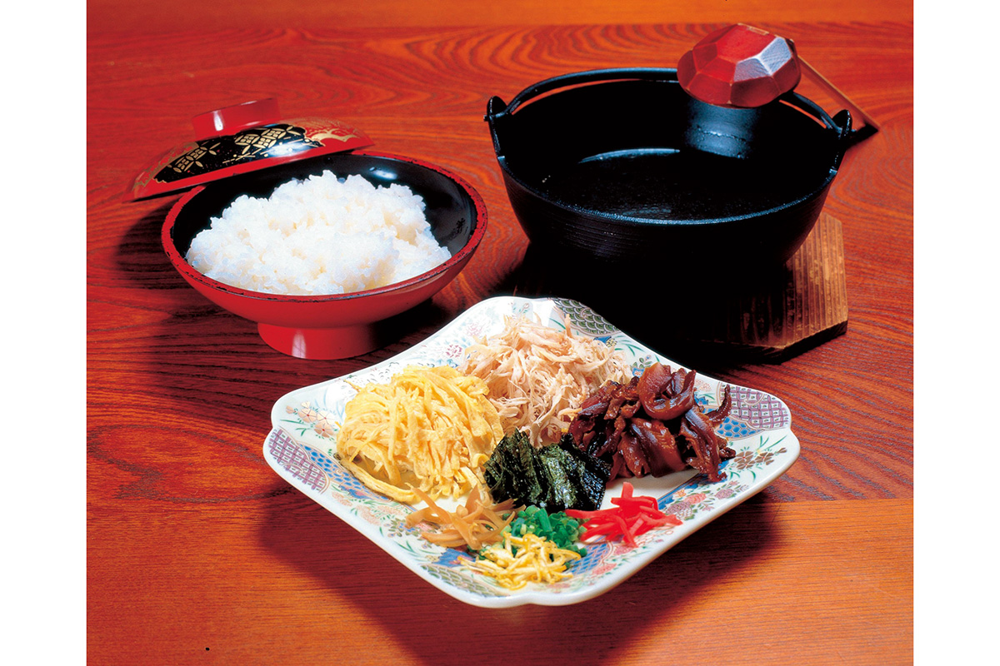
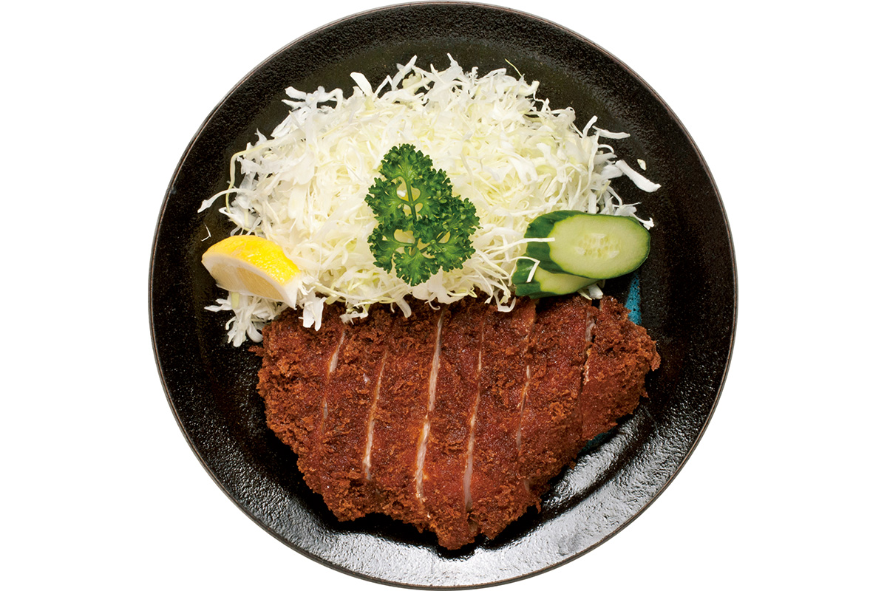
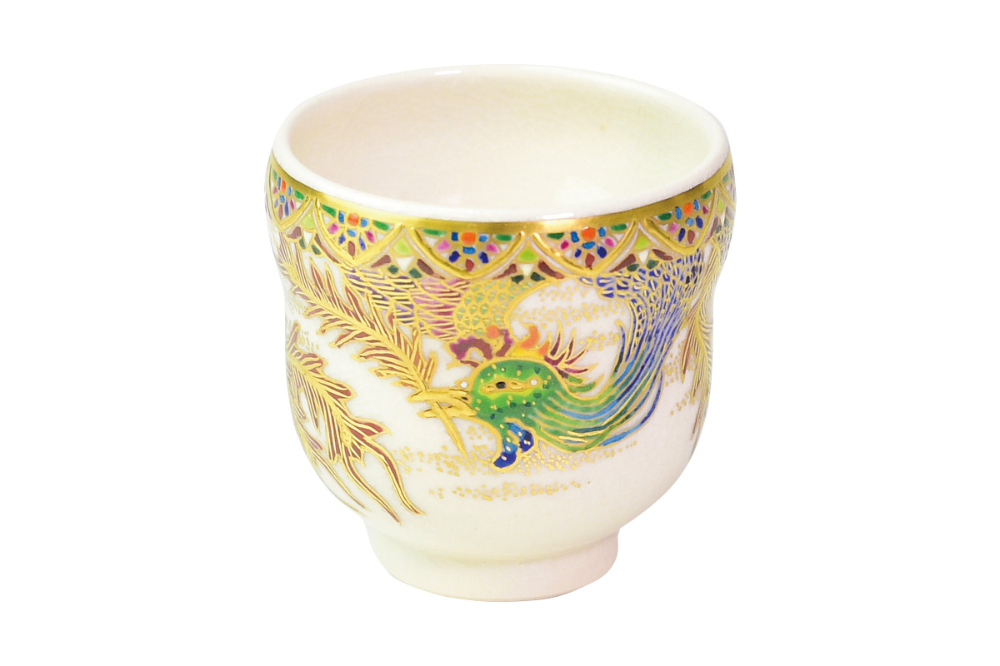
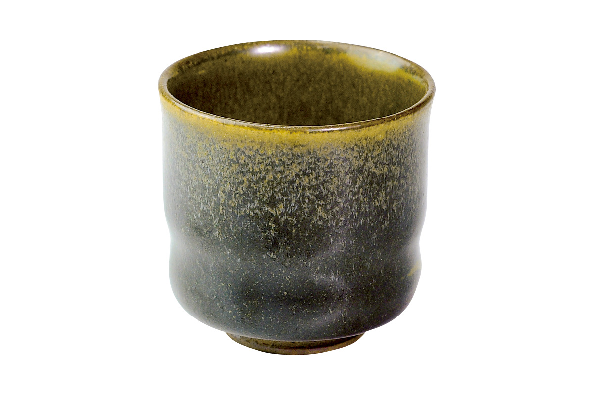
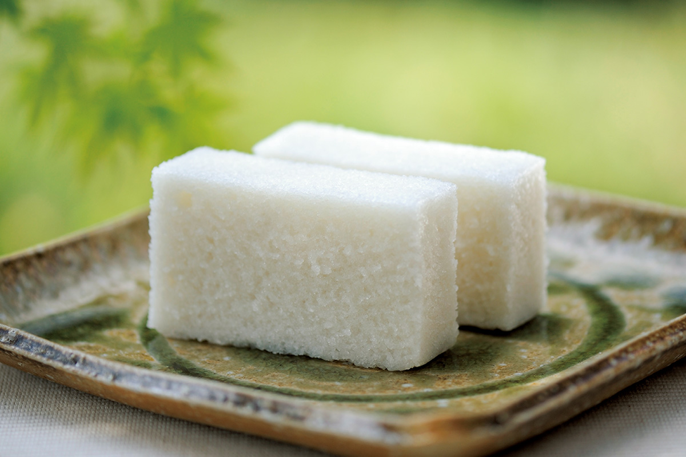

Префектура Кагосима
Кагосима: действующий вулкан над городом, остров древних кедров и свинина в панировке

Купальня под открытым небом рёкана Мёкэн Исихарасё стоит прямо над горной рекой, вокруг плотный зелёный лес.
Самый южный край Кюсю, где город живёт рядом с постоянно дымящимся вулканом, а в море уходят острова с древними кедрами. Разбираем, за чем ехать в Кагосиму: от чашки местной керамики до рисовой сладости из горного ямса.
Карта: 121 место из 30 статей · все статьи о префектуре Кагосима
Карта
Кагосима на карте
121 место из наших статей о префектуре Кагосима: залив Кинко и Сакурадзима, онсэны Ибусуки и Кирисимы, места реставрации Мэйдзи, лес Якусимы, Танэгасима, острова Амами, Токуносима и Ёрон. Нажмите на точку, чтобы открыть статью.
Пунктирный круг означает, что точка примерная: место находится в этом районе или на этом острове.
О префектуре
Место, где многое началось впервые
Кагосима лежит на самом юге Кюсю и состоит из части острова с полуостровами Сацума и Осуми, а также из островов Танэгасима, Якусима и Амами-Осима и многих малых. Якусима первой в Японии вошла во всемирное природное наследие, и вообще природного разнообразия здесь очень много.
С этими местами связано много «первого»: происхождение государственного гимна и флага, завоз огнестрельного оружия из Европы, первый запуск спутника. Вулкан Сакурадзима постоянно выбрасывает пепел, и город рядом с настолько активной горой это редкость даже в мире, потому в местном прогнозе погоды отдельно передают сводку о пепле.
Имя префектуры объясняют несколькими версиями: по одной здесь было много диких оленей, по другой оно идёт от слова, означающего вулкан. В последние годы известность получил местный крафтовый джин: старые винокурни префектуры делают его на местных цитрусах, и он стал частью большой волны интереса к такому напитку.
Что посмотреть
Мыс с самым старым маяком
Мыс Сата
Это самая южная точка главного острова. В пятидесяти метрах от скалистого обрыва стоит один из старейших маяков страны, а со смотровой площадки видны острова Якусима и Танэгасима.

- Справки
- информационный центр парка мыса Сата
- Телефон
- +81 994-27-3151
Что ещё посмотреть
- Вулкан Сакурадзима, действующая гора над заливом
- Космический центр Танэгасима, площадка запуска спутников
- Музей космоса и техники, экспозиция о полётах в космос
Праздники
Танцы на главной улице города
Праздник Охара
Самый крупный традиционный праздник южного Кюсю, который впервые провели в 1949 году. Второго и третьего ноября вокруг квартала Тэнмонкан в центре города идёт большой общий танец, и в нём участвуют тысячи людей в одинаковых узорных юката.

- Период
- ежегодно 2 и 3 ноября
- Место
- район Тэнмонкан и улицы города Кагосима
Другие праздники
- Праздник Хацуума, обряд у святилища в начале года
- Сёдон-сибая, песенные обряды на острове Амами-Осима
- Праздник Яго-дон, огромная фигура в шествии
Музеи и архитектура
Ворота замка, восстановленные через век
Ворота башни замка Кагосима
Ворота построили как главный вход замка Кагосима, но в 1873 году они сгорели. Через 147 лет их восстановили, и с апреля 2020 года они вновь открыты для посетителей.

- Адрес
- 7-2 Shiroyama-cho, Kagoshima, Kagoshima
- Телефон
- +81 99-222-5100
Что ещё посмотреть
- Лес искусства Кирисима, скульптура под открытым небом
- Собор памяти Ксавье, католический храм города
- Центр истории и искусства Рэймэйкан, музей при воротах замка
Местная кухня
Рис с куриным бульоном
Кэйхан
Блюдо делают в основном на островах Амами. На рис кладут разобранную варёную курицу, тонкий омлет и сладковато тушёные грибы сиитакэ, а затем заливают бульоном, сваренным из целой курицы.

Что ещё попробовать
- Кухня на свиных костях, густое тушёное мясо на костях
- Сашими из курицы, тонко нарезанное сырое мясо птицы
- Суп сацума-дзиру, домашний суп с мисо и корнеплодами
Где поесть
Свиная котлета в три сантиметра
Тонкацу Маруити
Заведение на улице Тэнмонкан известно котлетами из местной чёрной свиньи. Куски толщиной больше трёх сантиметров жарят около пятнадцати минут, потому внутри мясо остаётся мягким и сочным.

- Адрес
- 1-10 Yamanokuchi-cho, Kagoshima, Kagoshima
- Телефон
- +81 99-226-3351
- Часы
- 11:30-14:00, 17:30-21:00
- Выходные
- воскресенье
Ремёсла
Керамика, привезённая с другого берега
Керамика Сацума
Начало промысла связано с тем, что правитель области привёз с собой мастеров-гончаров с Корейского полуострова. Особенно известны две линии: нарядная белая с пышной росписью и тёмная, сдержанная по цвету.

- Справки
- союз мастеров керамики Сацума
- Телефон
- +81 99-294-9039
Тёмная керамика Курокацума
Другая линия промысла намеренно уходит от яркости: посуду покрывают глухой глазурью землистых оттенков, и вещь получается тяжёлой и спокойной по ощущению.

- Справки
- мастерские керамики Курокацума
Что привезти
Паровая сладость из горного ямса
Карукан от Акасия
Сладость делают из отборного горного ямса, рисовой муки и сахара и готовят на пару, потому по структуре она получается рыхлой и легкой. В Кагосиме известна мастерская, которая работает уже 165 лет, одна штука стоит 238 иен.

- Телефон
- +81 120-080-431
- Сайт
- akashiya.co.jp
Где остановиться
Девятнадцать комнат у горной реки
Мёкэн Исихарасё
Рёкан стоит у горной реки Тэнку, которая течёт через центр префектуры. Пять купален сделаны по-разному, и в них вода идёт из источника без подогрева, включая купальню под открытым небом прямо над водой.
- Адрес
- 4376 Kareigawa, Hayato-cho, Kirishima, Kagoshima
- Телефон
- +81 995-77-2111
- Комнат
- 19
- Цена
- от 22 000 иен за ночь с двумя приёмами пищи на человека, без налогов и сборов
- Сайт
- m-ishiharaso.com
Местный диалект
Как здесь говорят «очень вкусно»
- вадзэ уммакаочень вкусно
- анси то ва макоти боккэмон дзятот человек действительно смельчак
- ра:фуру дэ кокубан о кэсустирать с доски стирателем
Рекорды
В чём Кагосима первая
- №1 производство сушёной стружки кацуобуси
- №1 выращивание конских бобов
- №1 поголовье мясного скота чёрной породы
Вопросы и ответы
Что ещё спрашивают о Кагосиме
Сколько весит самый тяжёлый в мире местный дайкон?
31,1 килограмма при обхвате 119 сантиметров. Этот корнеплод победил на местном конкурсе в 2003 году и был внесён в книгу рекордов, а министерство сельского хозяйства включило его в список продуктов, которые стоит сохранить для будущего.
Как называется самое большое старое дерево на острове Якусима?
Дзёмон-суги. Высота около 25,3 метра, и это, как считается, самый толстый кедр страны. Имя объясняют тем, что при обнаружении в 1966 году возраст дерева оценили временами эпохи Дзёмон.
Справочник
Кагосима в цифрах
Общие сведения
| Административный центр | Кагосима |
| Муниципалитеты | 19 городов, 20 посёлков, 4 села |
| Площадь | 9187 кв. км |
| Население | 1,59 млн человек |
| Плотность населения | 175,7 человека на кв. км |
| Туристов в год | 4,51 млн |
| Дерево префектуры | кайкодзу и камфорное дерево |
| Цветок префектуры | мияма-кирисима |
| Птица префектуры | синяя сойка рурикакэсу |
Климат
| Средняя температура | +19,0 |
| Максимум | +33,6 |
| Минимум | +3,7 |
| Осадки | 2397 мм |
| Ясных дней | 34 |
| Дождливых дней | 114 |
| Снежных дней | 9 |
Для путешественника
| Онсэнов | 100 |
| Гостиниц и рёканов | 933 |
| Музеев искусств | 15 |
| Музеев | 5 |
| Митиноэки, придорожных станций | 22 |
| Национальное сокровище | меч с клеймом Кунимунэ в центре истории Рэймэйкан |
| Важных культурных ценностей | 40, из них 1 национальное сокровище |
| Исторических мест | 31 |
| Живописных мест | 5 |
| Природных памятников | 48 |
| Всемирное наследие | Якусима, объекты промышленной революции Мэйдзи |
Природные памятники
- Журавли Кагосимы и места их зимовки, птицы, прилетающие на зиму
- Ареал саговника в Кагосиме, естественные заросли саговника
- Камфорное дерево в Камо, старое дерево у посёлка
Наши статьи
Все статьи о префектуре Кагосима
Город Кагосима и залив Кинко
- Залив Кинко и Сакурадзима: семь видовых точек вокруг вулканической кальдеры
- Кагосима реставрации Мэйдзи: по следам Такамори Сайго и трёх людей рядом с ним
- Чёрная Кагосима: стекло сацума-кирико, засыпанные тории, тёмный онсэн и сладкий соевый соус
- Вкус залива Кинко: свинина, сётю, рыба и стекло Кагосимы
- Город Кагосима глазами дизайнера: чай, ремёсла, лапша и вечер в бывшем банке
Ибусуки и юг полуострова Сацума
Кирисима и север
- Станция Кирисима-дзингу: деревенский вокзал, ради которого стоит сойти с поезда
- KAI Kirishima: онсэн с видом на Сакурадзиму и вечер, посвящённый сётю
- Онсэн Мёкэн: пузырьки углекислоты в ущелье реки Амори
- TENKU в Кирисиме: виллы на холме в пятнадцати минутах от аэропорта
- Ёсихиро Симадзу: князь Сацумы, который прорвался сквозь вражескую армию при Сэкигахаре
- Первая работа Ясуси Хорибэ: музей местного врача и «Южный дом» в Сацуме
- Сацума-кирико: резное стекло Кагосимы, которое вернули к жизни через сто лет без точки на карте
- KOMASA GIN: джин из самых маленьких мандаринов в мире, выросших под пеплом Сакурадзимы
- IWASHI BUILDING в Акунэ: как сушёная сардина стала поводом для поездки
Якусима и Танэгасима
- Якусима: моховой лес, кедр Дзёмон-суги и онсэны у самого моря
- samana hotel Yakushima: отель между горой и океаном на юго-востоке Якусимы
- Yakushima Millennium Cola: крафтовая кола с острова, где месяц длится 35 дождливых дней без точки на карте
- Танэгасима: остров, где Япония впервые сделала аркебузу, а теперь запускает ракеты
Острова Амами
- THIDA MOON на Амами-Осима: отель ткачей осима-цумуги с видом на священную скалу
- Амами-Осима неспешно: отель MIRU AMAMI, ткань из грязи, лес духов и куриный суп кэйхан
- «Дэнпаку» на Амами-Осиме: жить в старом доме деревни и танцевать с соседями
- Denpaku The Beachfront MIJORA: виллы на берегу Амами-Осимы, ужин на закате и круиз на деревянном катамаране
- Амами-Осима с гидом: мангровый лес, туманные джунгли Кинсакубару и ночная встреча с амамийским кроликом
- Амами-Осима: субтропический лес, редкие звери и остров, где люди живут с древности
- Семь пейзажей Амами-Осимы: пляжи, мысы и водопад, которые любит островная певица
- Токуносима: остров быков, древнего леса и жизни по-соседски
- Ёрон: остров, где песчаная отмель появляется из моря только в отлив
- TOBA TOBA COLA: крафтовая кола с острова Кикай из забытых мандаринов и 14 специй без точки на карте